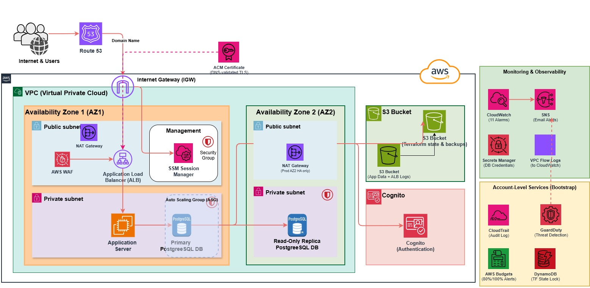

terraform
Web_app_infra
· AWS · Terraform
~/Web_app_infra/environments/prod
$
t
e
r
r
a
f
o
r
m
a
p
p
l
y
Apply complete!
dev · staging · prod — all green
Three isolated environments
.
dev
VPC
10.0.0.0/22
EC2
t3.small
ASG
1 – 2 servers
1 NAT gateway
staging
VPC
10.0.4.0/22
EC2
t3.medium
ASG
2 – 4 servers
1 NAT gateway
prod
VPC
10.0.8.0/22
EC2
t3.large
ASG
2 – 6 servers
HA NAT · deletion protection
Every request
takes this path
Route 53
DNS → load balancer
WAF
OWASP · SQLi · Log4Shell · rate limit
ALB
HTTPS only · TLS 1.3 · 2 AZs
EC2 Auto Scaling
scales out at 70% CPU
RDS PostgreSQL
primary + read replica, encrypted

web_app_infra.png — the architecture Terraform builds
No SSH.
No open ports.
No key pairs.
Admin access: SSM Session Manager only
$
aws ssm start-session --target
i-0a1b2c3d…
Web
_
app
_
infra
Production-grade AWS, written in Terraform.
11
Terraform modules
3
environments
0
open admin ports